Welcome to the user manual for the BrainMapper software.
When you launch the software for the first time, a set named "default" is already created.
To create a new set, you can use the shortcut "Ctrl+S" or click on the menu "New Set"/ "Create new set" 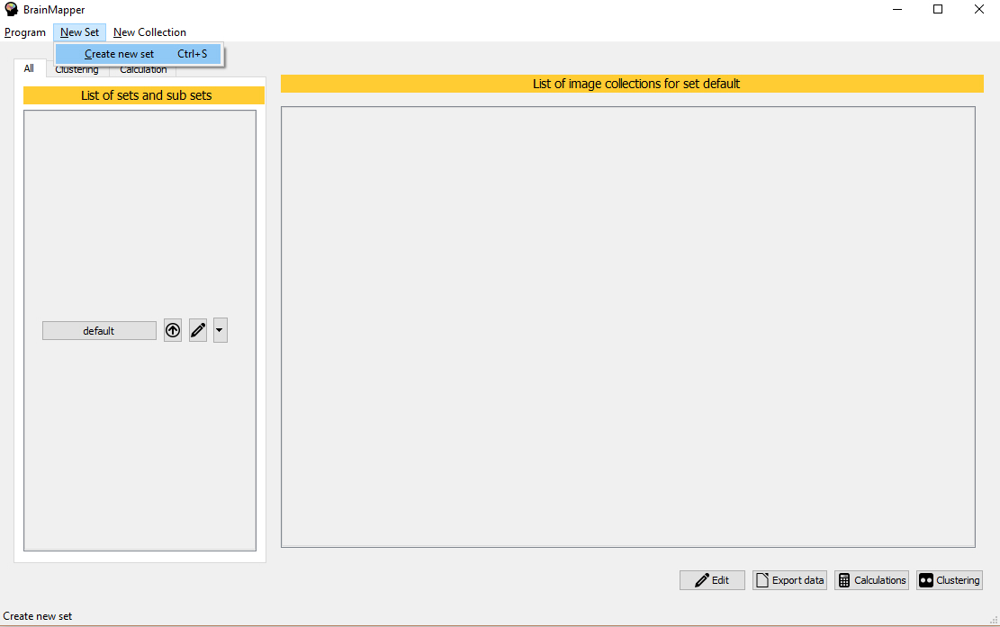
Each set works the same way. You will see a little menu next to the name of your set. Click on the little pen logo to access to the rename pop up.
You will not be able to name two sets the same way. Furthermore, the software prevent you to add unauthorized symbols to the name of your set, such as : "/",";"...
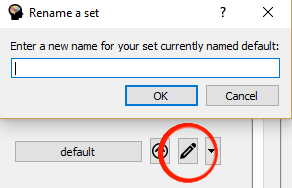
Each set can have an infinity of sub sets. It works exactly like a folder hierarchy. Each set, including the one that contains others, can contain some collections of images and data.
Each set (even if its a sub set)works the same way. You will see a little menu next to the name of your set. Click on the arrow logo to access to the sub set pop up.
You will not be able to name two sets the same way. Furthermore, the software prevent you to add unauthorized symbols to the name of your set, such as : "/",";"...
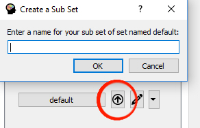
Note that you will see the list of a set's subsets by clicking on the little arrow logo on the right.
When you launch the software for the first time, a set named "default" is already created. That means, when you create a collection, it will be added to the current set, "default" in this case.
A collection is an object where we stock the data. Usually, the data are some images, that's why we will name the Collection object as an Image Collection.
There are two ways to create a collection : with an Excel file containing the points and some NIfTI files. These two options are available in the menu : "New Collection".
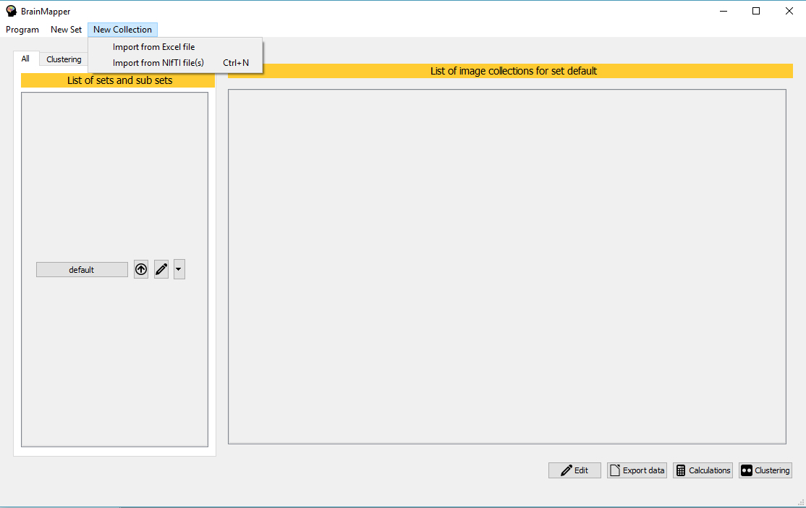
When you add a collection, it will be created and shown in the home page, related to its set.
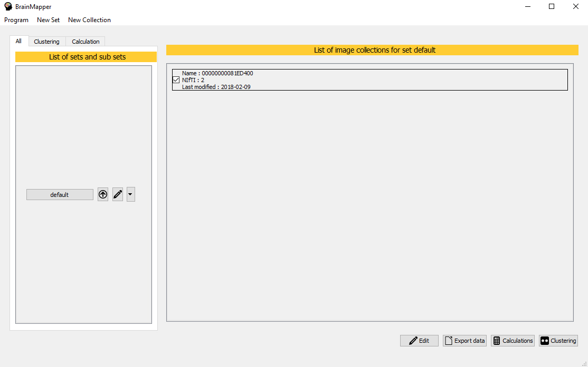
If you choose to create a collection with some NIfTI files, you will have to select them with a file browser. Note that you will be able to select images only if they are all in the same folder. Also, you can add only one image if you need to.
Note that you can add a colllection with NIfTI files using the shortcut "Ctrl+N".
To work on your data using BrainMapper, you have to select the collections you want to working on. To do so, just click on the collection you want (the selected collections are ticked).
Note that you can select collections even if they are not in the same set!
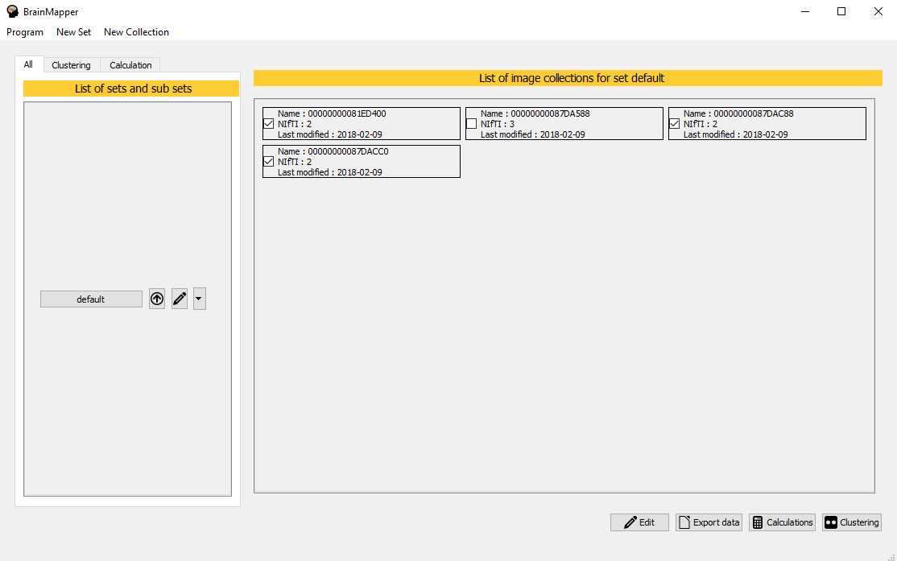
Once you added a collection, using NIfTI files or Excel file, you can edit them by using the menu at the bottom. That will show a new page where you will see the list of your selected Collections on the right.
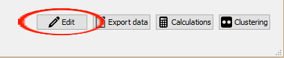
On the right, you can see your selected Collections. You can click on the name of the one you want to edit.
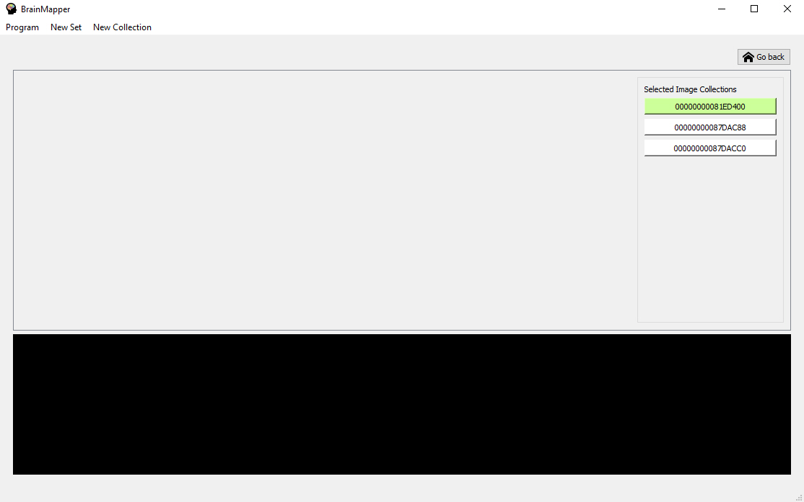
To rename the selected collection, you just have to click on the button "Change Collection Name" to access to the rename pop up. You will not be able to name two collections the same way. Furthermore, the software prevent you to add unauthorized symbols to the name of your collection, such as : "/",";"...
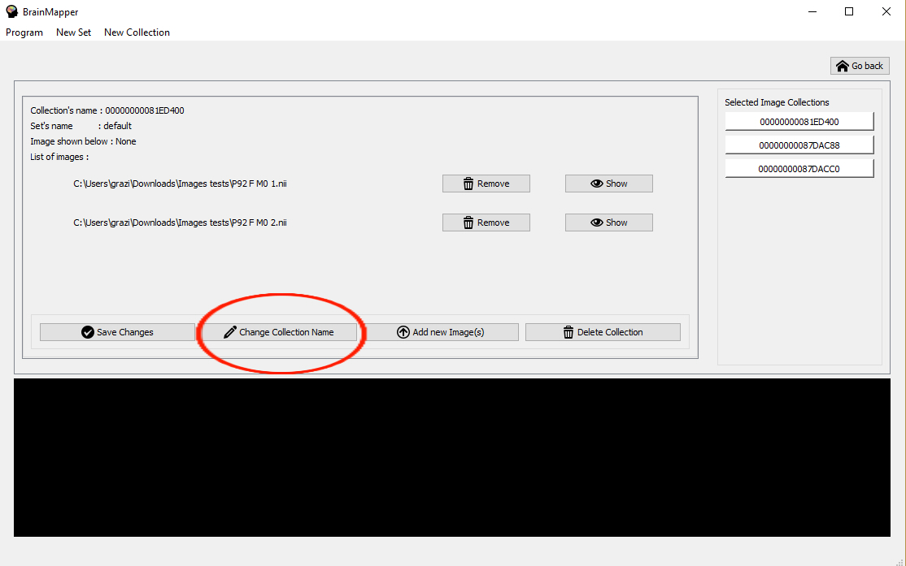
Even if your collection is created, you are still able to add some data into it. To do so, you just have to click on the button "Add new Image(s)". Then, you will add your NIfTI files the same way you added them to create the collection.
The new images will immediatly be added to the collection and will appear in the list of images.
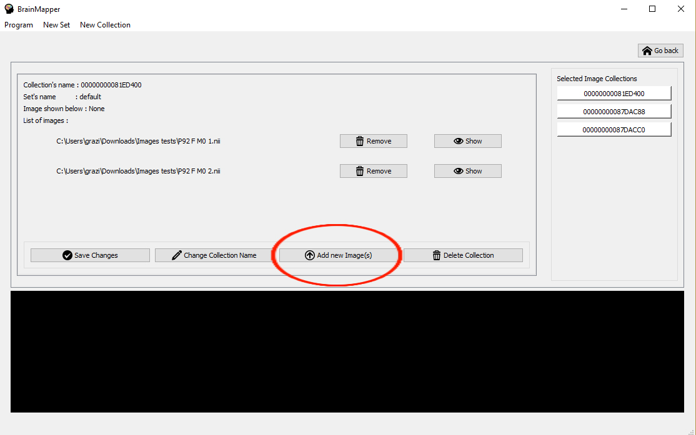
To remove one or several images from a collection, you have to click on the button "Remove" next to the name of the image. This name will now appear red. If you change your mind, you can click on the new button "Re Add", to cancel the image removal.
This process need a save. When you have choosed your images to remove, click on the button "Save changes" to remove them permanently.
Note that this process is not cancelable. But you can re add your images using the "Add images to a Collection" method.
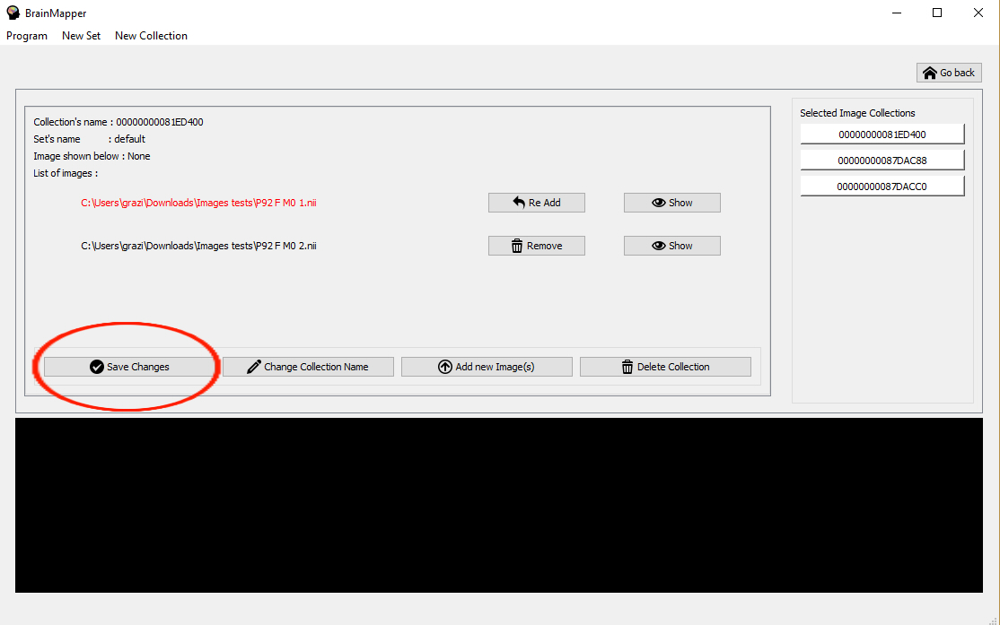
In order to quickly realize what the chosen image contains, it is possible to click on the "Show" button.
A basic visualization appears at the bottom of the screen. Note that this visualization may take a little time if the image contains a lot of information. You can then manipulate the visualization by clicking, moving the mouse in it or by scrolling.
The name of the image shown is displayed at the top of the screen.
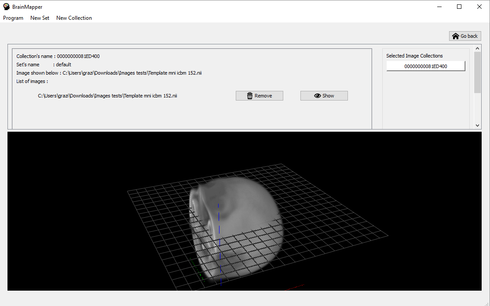
You can delete a collection by clicking on the "Delete Collection" button. This action is irreversible and takes effect immediately. The application will go back to the home page.
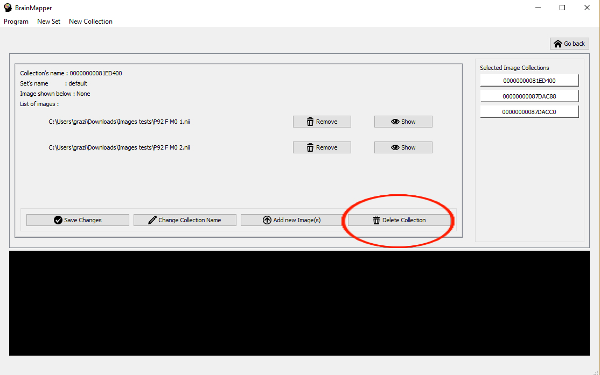